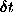
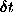
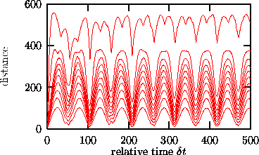

Next: Nonlinear prediction
Up: Visualizationnon-stationarity
Previous: Recurrence plots
While the recurrence plot shows absolute times, the space-time separation plot
introduced by Provenzale et al. [41] integrates along parallels to the
diagonal and thus only shows relative times. One usually draws lines of
constant probability per time unit of a point to be an  -neighbor of
the current point, when its time distance is . This helps
identifying temporal correlations inside the time series and is relevant to
estimate a reasonable delay time, and, more importantly, the Theiler-window w
in dimension and Lyapunov-analysis (see Sec.
-neighbor of
the current point, when its time distance is . This helps
identifying temporal correlations inside the time series and is relevant to
estimate a reasonable delay time, and, more importantly, the Theiler-window w
in dimension and Lyapunov-analysis (see Sec.  ). Said in
different words, it shows how large the temporal distance between points should
be so that we can assume that they form independent samples according to the
invariant measure. The corresponding routine of the TISEAN package
is stp, see Fig. .
). Said in
different words, it shows how large the temporal distance between points should
be so that we can assume that they form independent samples according to the
invariant measure. The corresponding routine of the TISEAN package
is stp, see Fig. .

Figure:
Space-time separation plot of the CO laser data. Shown are lines of
constant probability density of a point to be -neighbor of the
current point if its temporal distance is . Probability densitites
are 1/10 to 1 with increments of 1/10 from bottom to top. Clear
correlations are visible.
laser data. Shown are lines of
constant probability density of a point to be -neighbor of the
current point if its temporal distance is . Probability densitites
are 1/10 to 1 with increments of 1/10 from bottom to top. Clear
correlations are visible.
Next: Nonlinear prediction
Up: Visualizationnon-stationarity
Previous: Recurrence plots
Thomas Schreiber
Wed Jan 6 15:38:27 CET 1999